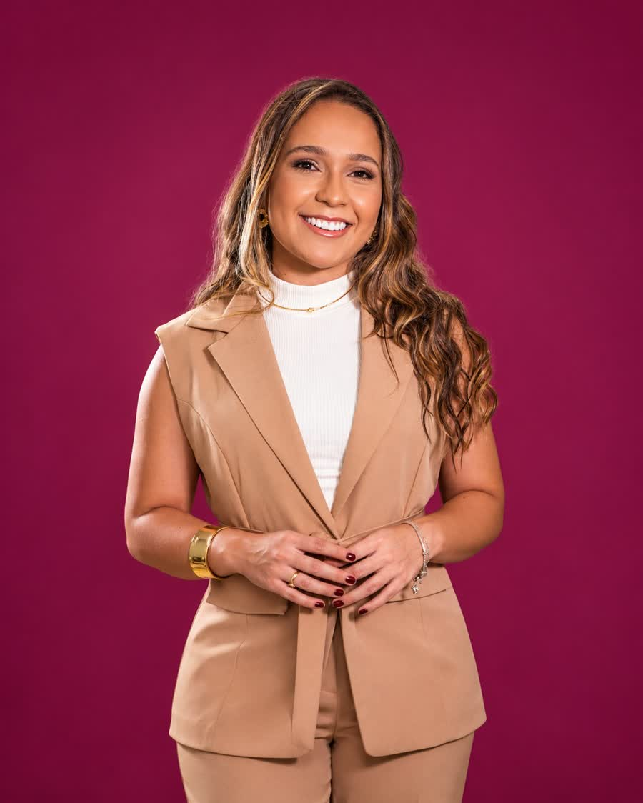
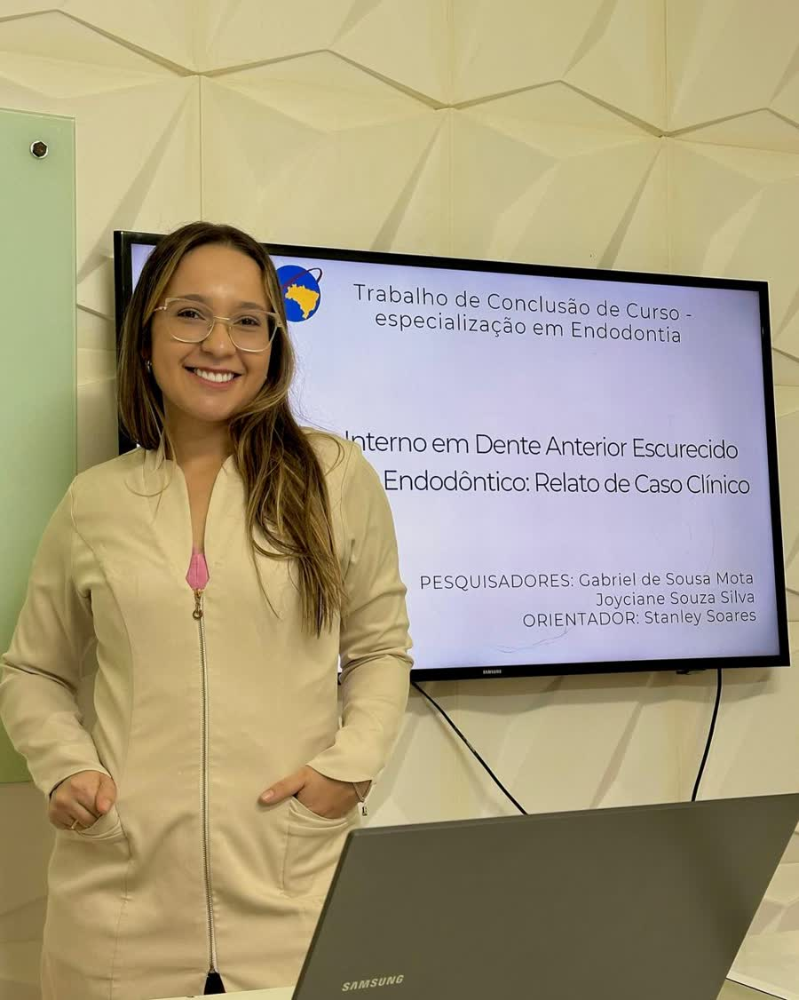
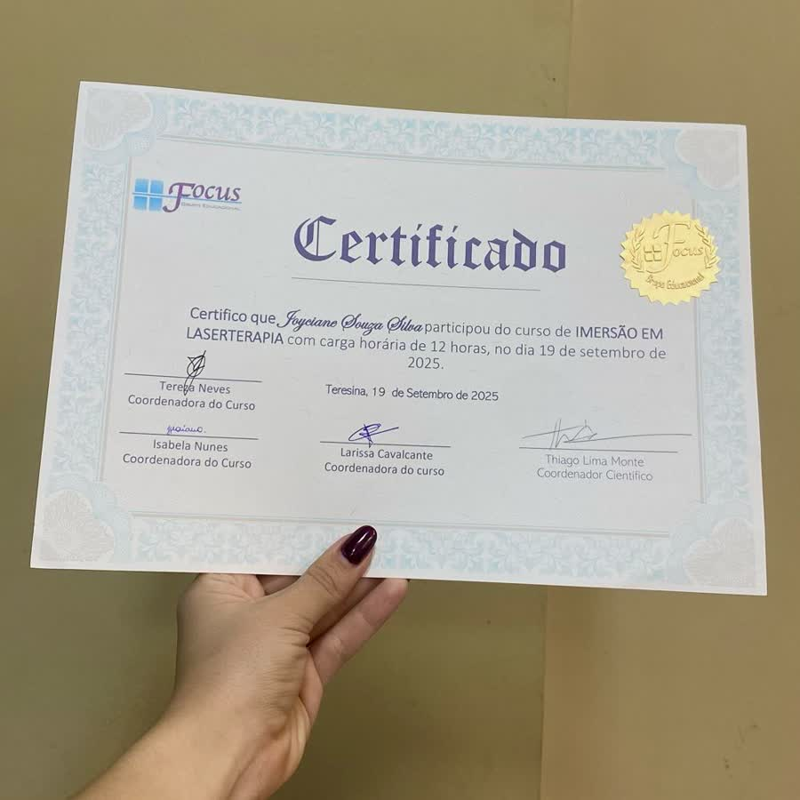

km 0
Avaliação
Conversa e exame para entender o seu caso. Você pergunta tudo, sem pressa.

Toque em uma porta para ver o que ela já fez e como é cuidado cada tema.
Agendar pelo WhatsAppCada consulta é um trecho do caminho, feito no seu ritmo.
Conversa e exame para entender o seu caso. Você pergunta tudo, sem pressa.
Combinamos juntos o caminho, com as opções explicadas de forma clara.
Feito no seu ritmo, com pausas combinadas quando você precisar.
Retornos e cuidados para o sorriso seguir bem no dia a dia.
Arraste o cartão para a esquerda (mito) ou direita (verdade).
Acertos: 0 de 0
O que mais pesa para você? Escolha e a conversa começa.
Cirurgiã-dentista e endodontista, Joyciane também corre provas de rua, como 10 km e meia maratona.


Conte o que pesa e a gente combina o melhor momento.
Chamar no WhatsApp Instagram @drajoycianeEste conteúdo é informativo e não substitui consulta com cirurgião-dentista.